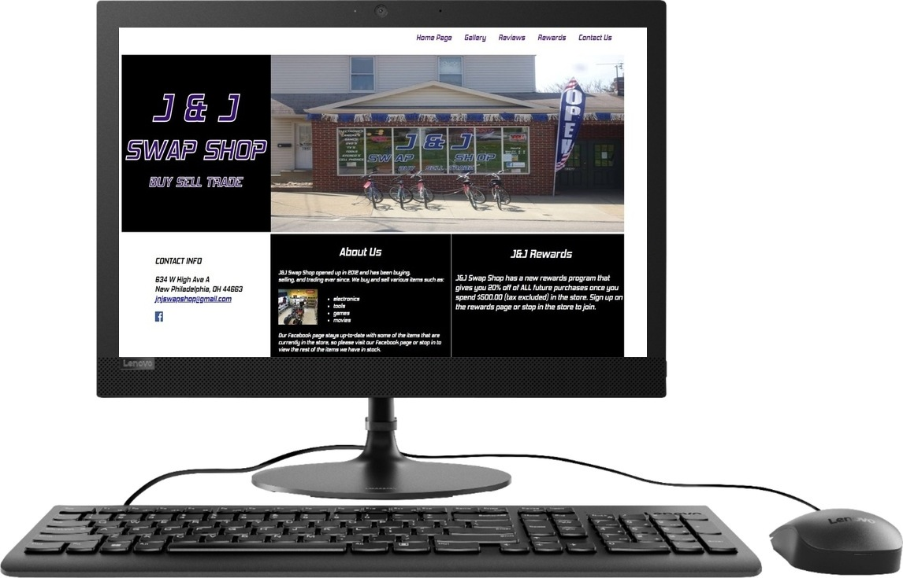
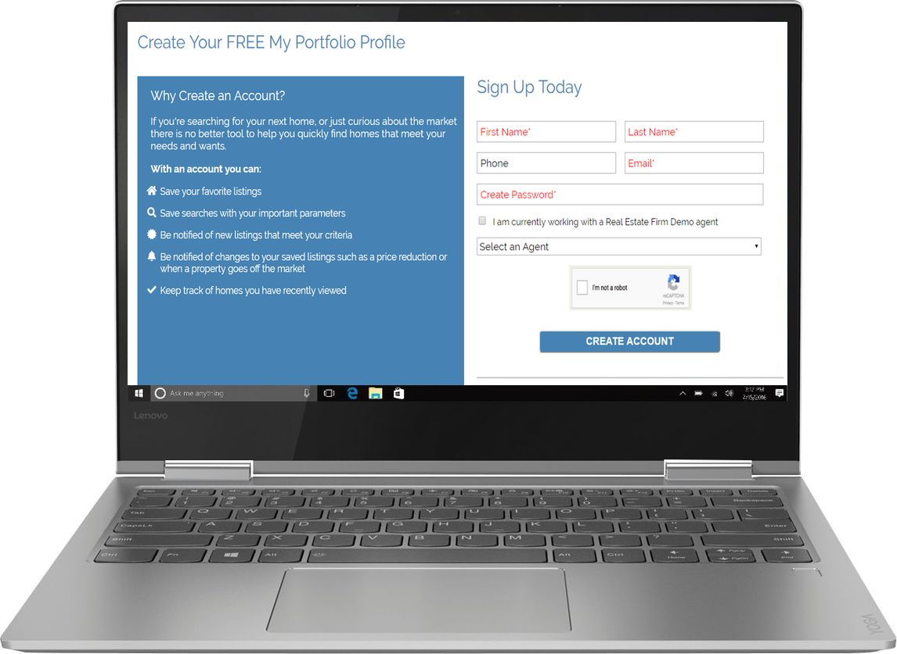

McKenzie McPeek
I'm an Ohio based web designer & software developer that is focused on creating modern user interfaces and websites that utilize clean code.
Portfolio
Below you can see a few of my projects that I have either completed or am in the progress of working on.
J&J Swap Shop Desktop Website
I am currently in the process of designing a desktop website for J&J Swap Shop in New Philadelphia, Ohio.

Internship Mock-Up
In 2018, I designed this mock-up website for an intership that I had applied for. I ultimately chose to accept my current job over this internship, but this website helped me gain a deeper understanding for design and forms.
Skills
I have experience coding in Java, HTML, CSS, Python, SQL, Visual Basic, and Javascript. I have the most experience in Java, HTML, and CSS. I've taken a few different classes where I learned HTML and CSS, and I've also coded websites on my own in these languages. I've taken one course each that taught Java, Python, Visual Basic, and SQL. I am currently teaching myself Javascript, and I'm in a course right now that teaches C+ along with coding mobile applications.
Along with programming languages, I also have computer technology skills from a lifetime of troubleshooting mine and my family's problems. In 2017, I had an internship where I worked at a school district in their IT department.
About Me
I'm 20 years old, from Ohio, and have been married for two years. Outside of coding and school, I enjoy spending time with my husband, dog, and my friends. I also enjoy going to the gym, running, reading, and travelling. I will graduate in May 2020 with my Bachelor's Degree in Computer Science, and I'm hoping to attend Georgia Tech the following semester to get my Master's Degree in Computer Science.
LET'S WORK TOGETHER!
If you liked my work and portfolio, please email me or contact me through any of the social media sites listed below.